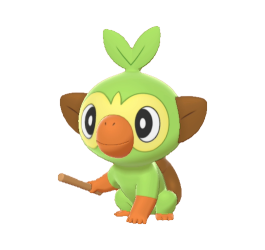
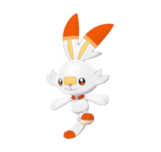
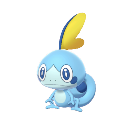

Ouistempo

Un Pokémon qui ressemble à un jeune primate, au corps principalement vert avec une queue et des oreilles brunes.
Flambino

Un Pokémon à l’allure lapine et au corps principalement blanc. Il a des marques orange et jaunes sur les oreilles.
Larméléon

Un petit Pokémon à la peau bleu clair avec quelques taches plus foncées et un visage et un ventre plus clairs.